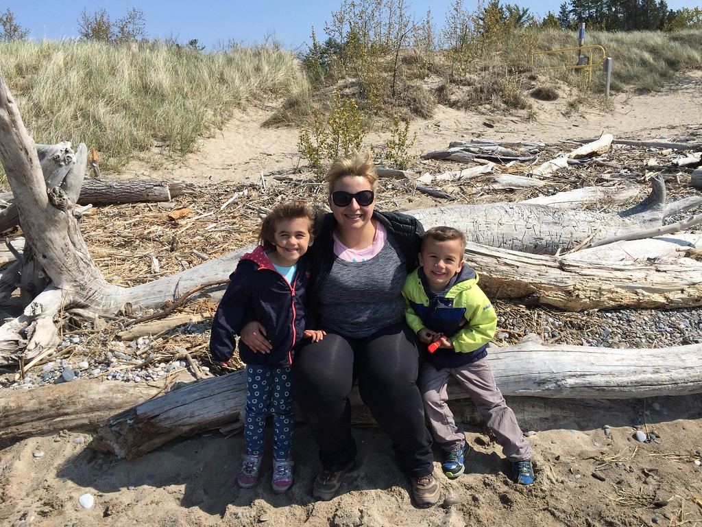

My name is Noelle Pavlovic. Noelle (like Christmas in French) Pavlovic (pronounced Pav-lo-vich) I worked in the IT Services department of a University for the last 12 years. I was a member of the Client Services and Support group. I recently left that position to pursue a new career. I am interested in web development and mobile app development. Also interested in home automation. I have a Computer Science degree so I did a lot of coding while I was in school. I have coded in C, C++, HTML, PHP, Javascript and Java. However, since I obtained employment in IT immediately after I graduated, in a position that did not require any programming, I have never professionally coded. I have dabbled in some web development for personal projects, but nothing major. I have a son and a daughter. They are 6-and-a-half year old twins. Our family LOVES the outdoors and we love going camping during the spring/summer/fall. This is the first website I have developed in many years. Oh yeah, The Tragically Hip are one of my favourite bands.
